AI Engineer Code Summit · San Francisco · 2026-11-11
OK. So, once again, my name is poteto. I’m working on Grok Bot at SpaceXSI.
好。再说一次，我叫 poteto。我在 SpaceXSI 做 Grok Bot。
Can we have a quick show of hands? Have any of you ever looked at code written by someone else and thought, “This is complete slop”? Well, me too.
举个手？有没有人看过别人写的代码，心里想：「这完全是垃圾（slop）」？我也有。
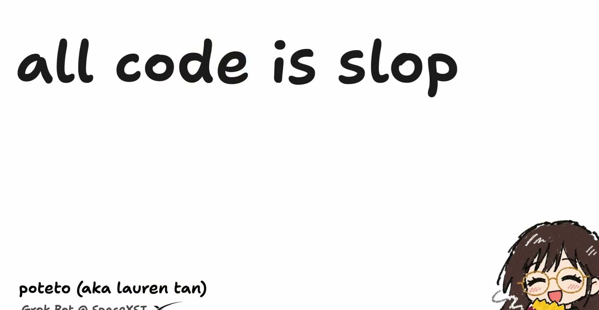
But today I will convince you that this junk can be turned into gold.
但今天我想说服你们：这些垃圾可以变成黄金。
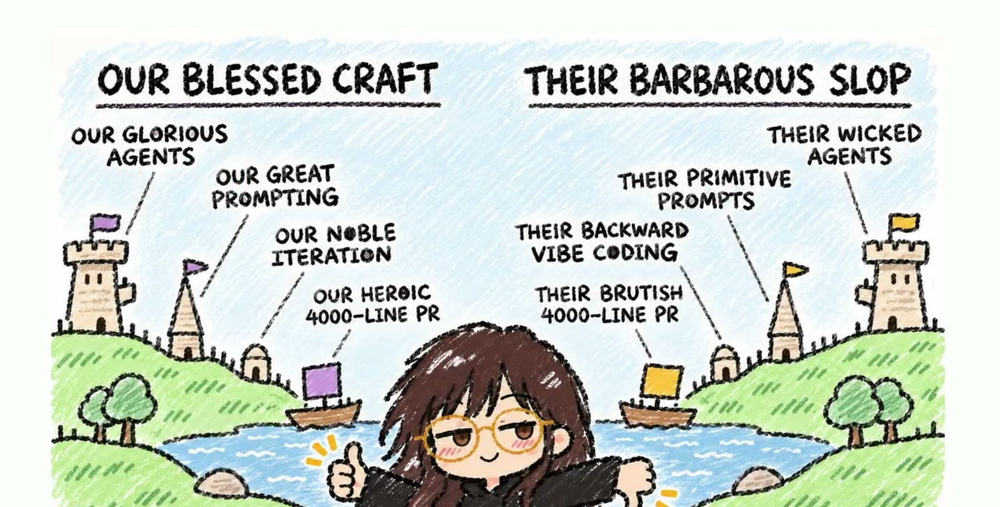
When we write the code, we call it craft. When somebody else does the exact same thing, we call it slop. A heroic 4,000-line PR on our side is a brutish 4,000-line PR on theirs.
自己写的叫手艺，别人写的同样东西就叫 slop。我们这边是「英勇的 4000 行 PR」，对面就是「粗野的 4000 行 PR」。
Last month I did something crazy: I shipped 3,000 pull requests to production.
上个月我干了件疯狂的事：往生产环境合入了 3,000 个 pull request。
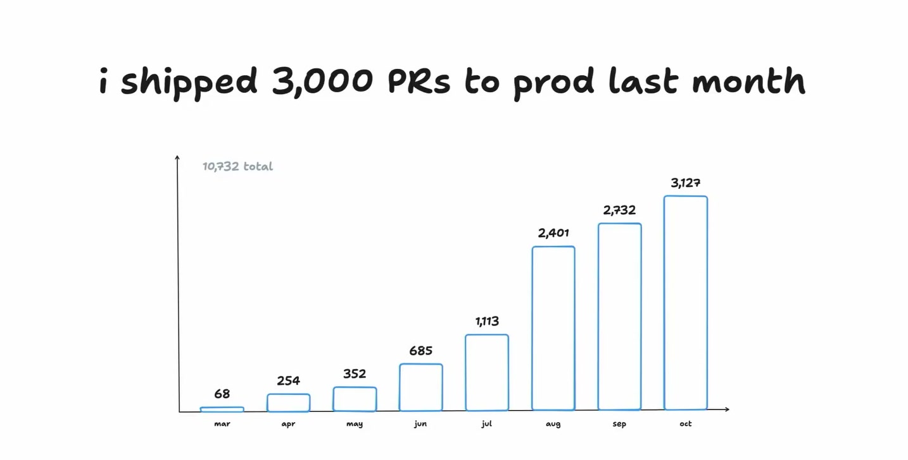
The chart is more precise than the title. March was 68. July 1,113. August 2,401. October 3,127. 10,732 in total.
图比标题更精确：3 月 68，7 月 1,113，8 月 2,401，10 月 3,127，一共 10,732。
Before agents, we never worried about volume, except in exceptional cases. At my previous company they called such people “coding machines.” People like Bret Taylor, who once rewrote all of Google Maps in a weekend. Just an incredibly productive engineer.
有 Agent 之前，除了极少数人，没人真正操心产量。上一家公司把这种人叫「编码机器」。比如 Bret Taylor，传说一个周末重写了整个 Google Maps。就是那种极致高产的工程师。
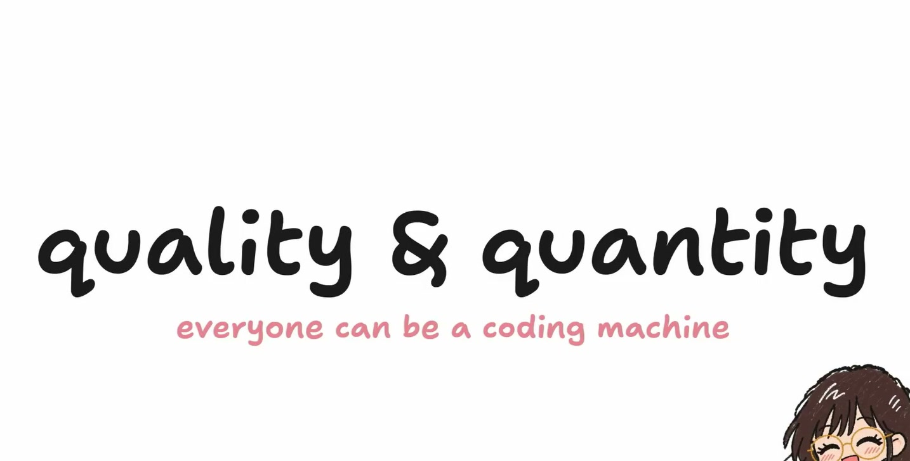
And now, thanks to agents, everyone can become a coding machine. My thesis is that the job of a software engineer — the meta of programming — is to figure out how to maintain or even improve the quality of the code while significantly increasing productivity.
现在有了 Agent，人人都能成为编码机器。我的论点是：软件工程师的工作、编程这件事的 meta，是在大幅提高生产力的同时，维持甚至提高代码质量。
Some people call this a “software factory.” I prefer to simplify: everything comes down to trust. Not blind trust, but investing in the agent environment so you can be sure they will do the right thing.
有人把这叫「软件工厂」。我更愿意说简单点：一切归结为信任。不是盲目信任，而是投资 Agent 的环境，让你确信它们会做对的事。
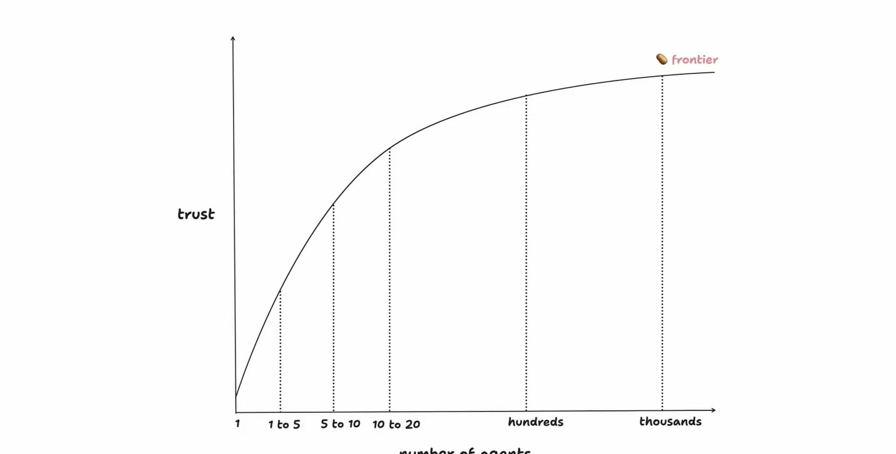
This takes a lot of effort. It took me half a year to get to the point where I could issue thousands of merge requests, many of them while I was sleeping. It is quite possible, and it will take you much less time than it took me.
这很费功夫。我花了半年，才走到能发出几千个 merge request、其中很多是在睡觉时合进去的。这件事做得到，而且你们花的时间会比我少得多。
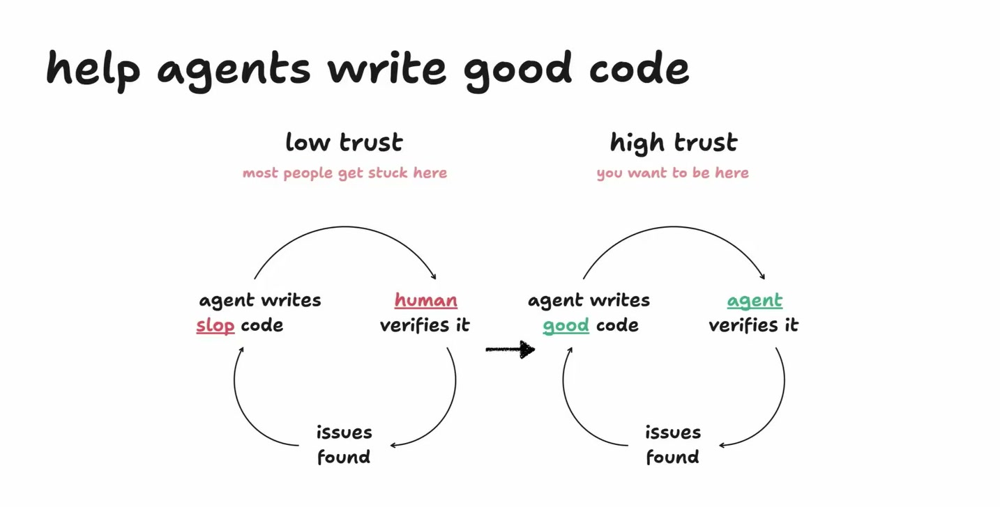
Most people get stuck in the low-trust loop: the agent writes slop code, a human verifies it, issues are found, repeat. You want the high-trust loop: the agent writes good code, and the agent verifies it.
大多数人卡在低信任循环：Agent 写出 slop，人来验证，发现问题，再来一轮。你要去的是高信任循环：Agent 写出好代码，并且由 Agent 自己验证。
So let’s start by discussing how to move from low to high levels of trust. This inverted pyramid shows how I allocate time to my agents’ environments.
先说怎么从低信任走到高信任。这张倒金字塔，是我把时间投在 Agent 环境上的方式。
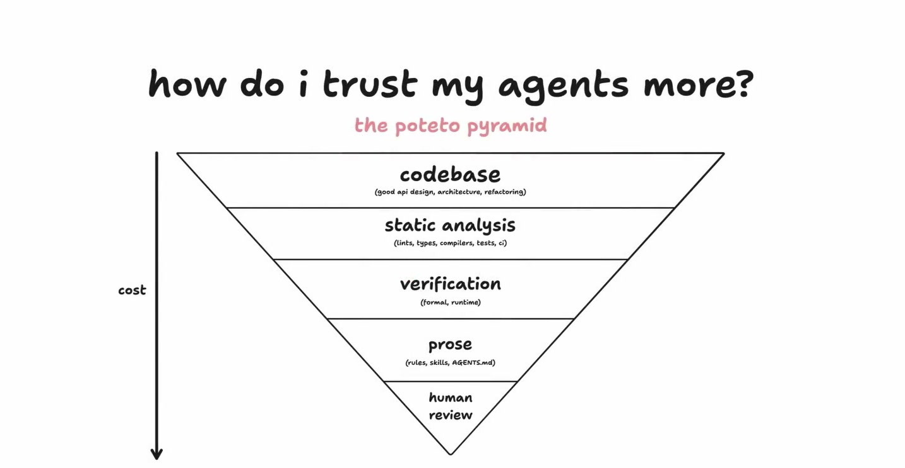
The first two layers are deterministic — they live in your own code. Good API design, architecture, refactoring. Then linters, type systems, compilers, tests, CI.
最上面两层是确定性的，都长在你自己的代码里。好的 API 设计、架构、重构；然后是 lint、类型系统、编译器、测试、CI。
You can use both of these levels together to restrict what agents can do and force them to do the right thing by default.
这两层可以一起用，限制 Agent 能做的事，逼它们默认就做对。
Verification — both runtime and formal — is a great tool for detecting errors, checking the properties and invariants of a system, and checking whether the agent understood your goals and intentions.
验证（运行时验证和形式化验证）能抓错、检查系统该守住的性质和不变量，也能检查 Agent 到底有没有理解你的目标和意图。
And finally, you want to add some descriptive instructions. These are rules, skills, AGENTS.md files — anything that requires judgment. That layer stays small, because text is not enforceable.
最后才加一点描述性指令：rules、skills、AGENTS.md，凡是还需要判断力的东西。这一层要小，因为文字不可强制执行。
Human review sits at the tip. It is the most expensive place to catch a mistake.
最尖的那一层是人工审查。在这里抓错，成本最高。
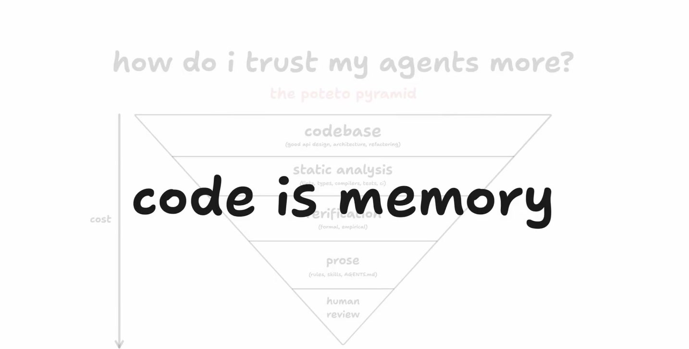
But let’s start with your codebase. Agents generate their results based on input data. The quality of that input really matters, and your codebase is one of the biggest sources of it.
先从代码库讲起。Agent 根据输入生成结果。输入质量非常重要，而代码库是最大的输入源之一。
So when you correct your agent, consider turning that into a deterministic check instead of adding a new line to your rules or AGENTS.md. It is much easier to reproduce in code, and it inspires more trust.
所以你纠正 Agent 的时候，优先把它做成确定性检查，而不是在 rules 或 AGENTS.md 里再加一行。写进代码更容易复现，也更值得信任。
An analogy I like: your codebase is like a garden. Before, code would come in a few pull requests at a time. I remember coming to work in 2024 and reviewing three merge requests that my colleagues had written. Today that number is approaching 300.
我喜欢的一个比喻：代码库像一座花园。以前代码是几个 PR 一批批进来。我记得 2024 年上班，审同事写的三个 merge request。现在这个数字接近 300。
Now each engineer is a team of hundreds or even thousands of agents, and the code is coming in so fast it almost feels organic, like a living thing.
现在每个工程师背后是成百上千个 Agent，代码来得太快，几乎像连续的流，像活的东西。
In this analogy, your codebase, the constraints you impose, and the safeguards you put in place are the concrete foundation around which new code written by your agents grows. In many ways, the work of a software engineer becomes similar to gardening.
在这个比喻里，代码库、你施加的约束、你设下的护栏，就是混凝土地基，Agent 写的新代码绕着它生长。软件工程师的工作，在很多方面开始像园艺。
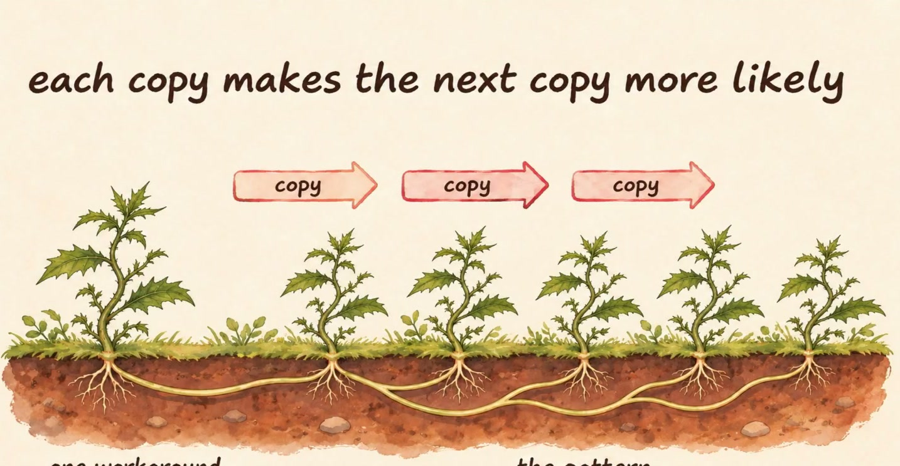
Since code is the largest input for agents, any workaround, anti-pattern, obsolete code, or technical debt will likely be copied by the next agent, because it looks like an established pattern in your codebase. It’s like weeds or pests in your garden. Before you know it, they’re spreading everywhere.
代码是 Agent 最大的输入，所以任何 workaround、反模式、过时代码、技术债，下一个 Agent 都很可能照抄——因为它看起来像代码库里的既定模式。像花园里的杂草和害虫，不知不觉就蔓延开。
So you want to make your codebase as clean as possible, so that agents only ever copy quality stuff.
所以你要把代码库尽量收拾干净，让 Agent 永远只复制高质量的东西。
Okay, let’s look at real examples. Dune is a client framework we built for Grok Bot to implement this idea of organic architecture. Technically it is not that complicated. You can think of Dune as something like Next.js for Electron apps.
看真实例子。Dune 是我们为 Grok Bot 做的客户端框架，用来落地「有机架构」。技术上并不复杂。你可以把它想成 Electron 应用的 Next.js。
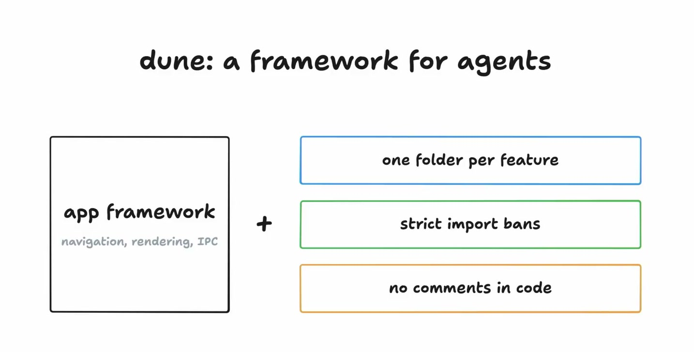
The interesting thing about Dune is the limitations and linting rules. We encoded many lessons learned while building desktop applications. One of those lessons: anything that requires nuance to use effectively often leads to slop.
Dune 真正有意思的是限制和 lint 规则。我们把做桌面应用时学到的很多教训写进了框架。其中一条：凡是要用好就得靠「分寸感」的东西，往往通向 slop。
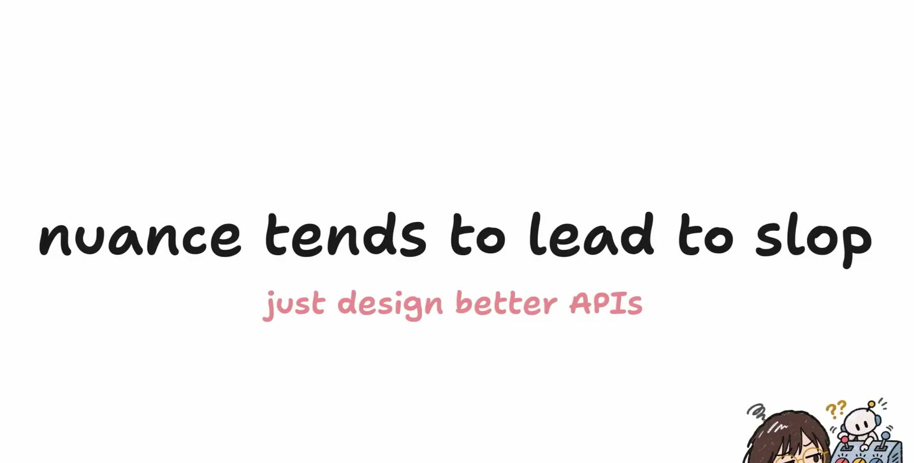
A classic example is useEffect in React. It has its uses, but it is often misused. Some joke that you need a PhD to use useEffect. In other words, to use it well you really need to take many nuances into account. Agents are not very good at using it.
经典例子是 React 的 useEffect。它有用武之地，但经常被误用。有人开玩笑说，用 useEffect 需要一个博士学位。也就是说，要用好它，得照顾很多细微之处。Agent 并不擅长这个。
So our solution was to simply disallow it in product code. It is only allowed in some places inside the Dune API. This issue has now been categorically eliminated. We no longer need to catch it during code review.
所以我们的办法是：产品代码里直接禁用。只允许出现在 Dune API 内部的少数地方。这个问题现在被从根上消灭了，code review 里再也不用抓它。
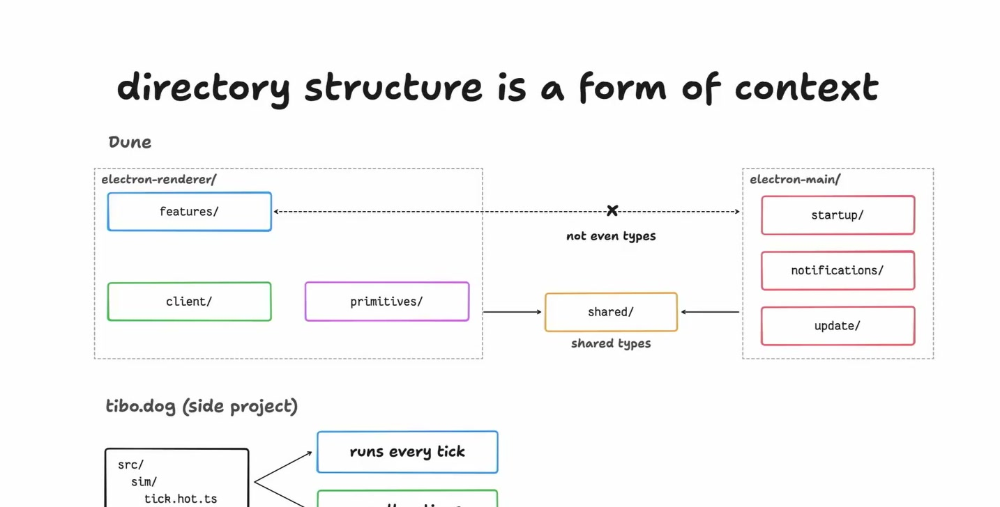
Another pattern we use is context through directory structure. One anti-pattern we noticed in Cursor, an Electron app, was that agents would often import main-thread code into the renderer, causing long tasks and jank.
另一个模式是：用目录结构携带上下文。我们在 Cursor（也是 Electron 应用）里看到过一个反模式：Agent 经常把主线程代码 import 进渲染线程，造成长任务和卡顿。
So in Grok Bot and other Dune apps we made it very standardized. We have two top-level directories, literally called electron-renderer and electron-main, and imports between them are prohibited by our dependency-graph analyzer and lint rules.
所以在 Grok Bot 和其它 Dune 应用里，我们把它标准化了。两个顶层目录就叫 electron-renderer 和 electron-main，它们之间的 import 被依赖图分析器和 lint 规则禁止。
These are simple linting rules that are easy to set up, but it means one less thing we need to think about when reviewing code.
这些 lint 规则很简单，但意味着 code review 时又少想一件事。
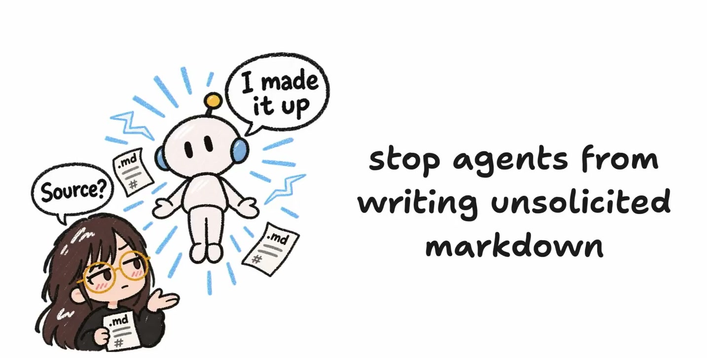
Another amazing thing I noticed is the agents’ use of Markdown. This applies to documentation, code comments, rules, or skills. They use it as a place to justify not doing things right.
我还注意到一件很惊人的事：Agent 很爱写 Markdown。文档、代码注释、rules、skills 都算。它们把这些地方当成「解释自己为什么没做对」的借口栏。
I don’t know if you’ve encountered this, but they can focus too much on a small correction you made and treat it like a strict rule that can never be broken.
不知道你们有没有碰到：你随口改了一点，它们就会过度解读，当成永远不能打破的铁律。
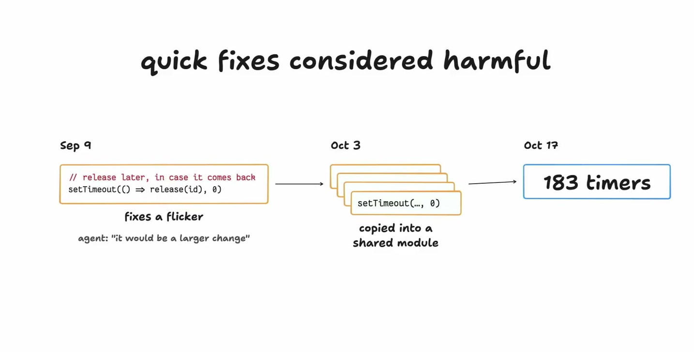
Here is another example from Cursor. Agents really liked to use imperative timers — setTimeout, requestAnimationFrame, requestIdleCallback — as a quick fix to patch the architectural conflict between VS Code’s imperative style and React’s declarative style.
再看 Cursor 的例子。Agent 特别爱用命令式 timer：setTimeout、requestAnimationFrame、requestIdleCallback，当作权宜之计，去打 VS Code 命令式风格和 React 声明式风格之间的架构冲突补丁。
So our architectural choice actually significantly degraded both client and agent performance. If you’ve ever worked with performance in JavaScript, you know that when lots of timers are created and destroyed quickly, it causes major garbage collection, leading to lag and jank.
于是这个架构选择，同时显著拖慢了客户端和 Agent。做过 JavaScript 性能的人都知道：大量 timer 被快速创建和销毁，会引发严重 GC，带来卡顿。
But the worst part is that the agents wrote a bunch of comments explaining why this quick fix was justified. Before we knew it, timers had spread everywhere, and the program’s performance had suffered significantly.
更糟的是，Agent 还写了一堆注释，解释这个权宜之计为什么合理。还没反应过来，timer 已经到处都是，性能明显变差。
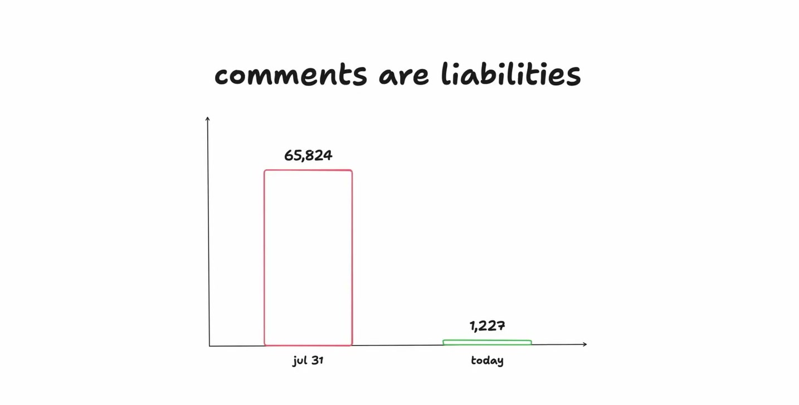
At Grok Bot, we learned this lesson and decided to simply ban 99% of comments, because they go stale quickly. People rarely read these comments anyway. And this again gives the agent a loophole to justify not doing the right thing because it’s hard.
在 Grok Bot，我们学到这一课，决定直接禁止 99% 的注释——它们过时很快。而且人本来也很少读这些注释。这又给了 Agent 一个漏洞：因为难，所以写一段话来合理化「没做对」。
The worst thing about comments is that they are not mandatory. So what seems like a good intention — “I’ll tell the next agent not to do that” — never becomes something you can trust.
注释最糟的一点是：它们没有强制力。看起来是好意，「我告诉下一个 Agent 别这么干」，但这永远不会变成你能信任的东西。
So in Grok Bot and Dune we now have linting rules that produce nice, very useful error messages. They prompt the agent to fix the root cause, the real problem, rather than just patching it.
所以现在 Grok Bot 和 Dune 的 lint 规则会给出很好、很有用的报错，促使 Agent 去修根因，而不是打补丁。
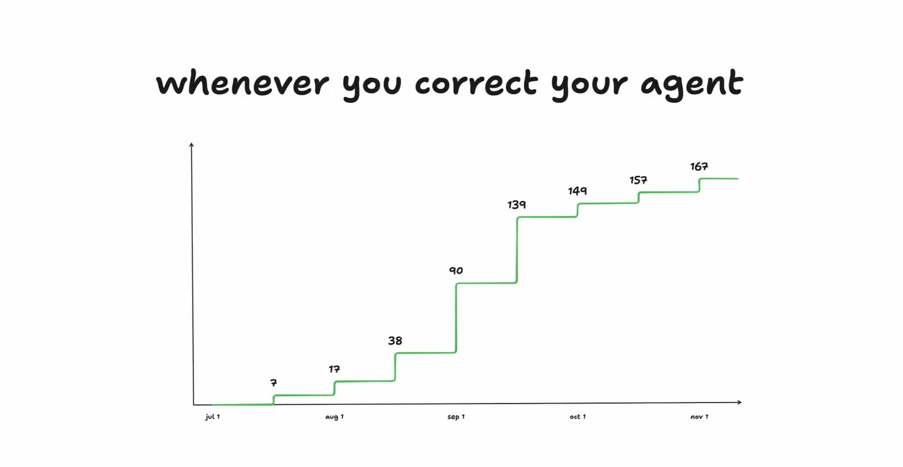
Our general principle: whenever we correct our agents, it turns into one of these deterministic checks, or we think about how to categorically eliminate the problem through better API design or architecture.
总原则是：每次纠正 Agent，就变成这类确定性检查；或者想办法用更好的 API 设计或架构，把这个问题从根上消灭。
If you do this often enough, you will notice that there are fewer and fewer things to consider when reviewing code. At a certain point you realize there is nothing left to watch. And you can simply let agents merge most of their own pull requests themselves.
你经常这样做，就会发现 code review 要盯的东西越来越少。到某个临界点，你会发现没什么要看了。然后就可以让 Agent 自己合入它们的大多数 PR。
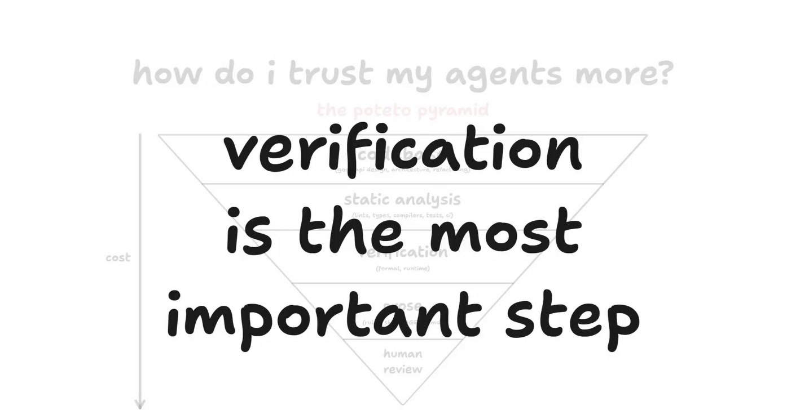
Moving forward, verification is a very important part of how we make our agents more autonomous, and also how we increase our confidence and trust in their work. Our code review process has now really come down to analyzing verification artifacts: videos, screenshots, diagrams, formal verification.
接下来，验证是我们让 Agent 更自主、也让自己更有信心的关键。现在的 code review，本质上是在看验证产物：视频、截图、图、形式化验证。
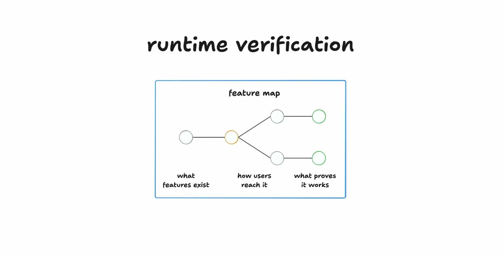
The simplest example is runtime verification, which is just a fancy way of saying: give the agent the ability to run the code itself and use the debugging tools that human developers also use, such as the Chrome DevTools protocol.
最简单的是运行时验证，说白了就是：让 Agent 自己跑代码，用人类开发者也会用的调试工具，比如 Chrome DevTools 协议。
In our runtime verification skills, we have something we call a “feature map.” This is essentially a sitemap of all the features available in your app from a user’s perspective. That means agents don’t have to guess when you say “that thing on the left panel.” It creates a shared vocabulary of terms.
运行时验证的 skill 里有一个我们叫 feature map 的东西。本质上是从用户视角出发的功能站点地图。这样你说「左边栏那个东西」时，Agent 不用猜。它建立了一套共享词汇。
We also use our own CLI in these skills so that agents can reuse the same CLI and driver every time, which reduces token usage and is also testable.
这些 skill 里还有我们自己的 CLI，让 Agent 每次复用同一套 CLI 和 driver，既省 token，也可以被测试。
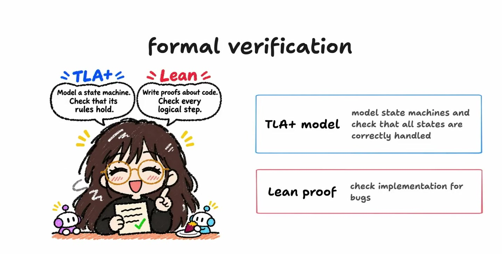
And recently we have also started looking at formal verification. We now use TLA+ to validate models of core user flows, such as notifications, across devices and platforms. We also use Lean to prove certain algorithms. For example, we created our own virtualization library and use Lean there to make sure we don’t have flicker or jitter issues.
最近我们也开始看形式化验证。现在用 TLA+ 去验证核心用户流的模型，比如跨设备、跨平台的通知。也用 Lean 证明某些算法。比如我们自己写了虚拟化库，用 Lean 确保没有闪烁或抖动。
We are still experimenting with this approach. It looks very promising. We have already found many errors through formal verification. This is of course not a panacea. We view it as another tool, another layer in our agent environment.
整体还在实验。看起来很有希望。我们已经靠形式化验证找到不少错误。这当然不是万灵药。我们把它看成工具箱里的又一层。
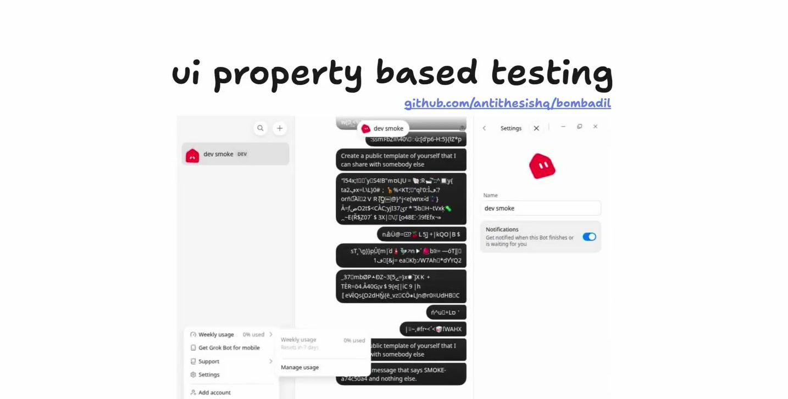
This is a very quick video, but another thing we started looking at is property-based interface testing. We use a library called Bombadil. It has already helped us identify several bugs in the interface.
很快带过：我们还开始做 UI 的 property-based testing，用的库叫 Bombadil。已经帮我们抓住过几个界面 bug。
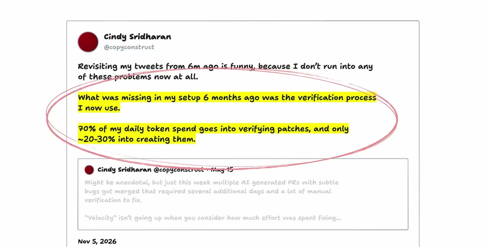
If you look at it more broadly, I saw Cindy’s tweet six months ago, where she wrote that she couldn’t trust her agents because of small errors that got into the code. What she lacked was a verification process. And now, six months later, she says 70% of her daily tokens are spent on verification. I would say this is consistent with my observations — most of my tokens are also going to verification.
再看大一点。六个月前我看到 Cindy 的推，说她不信任自己的 Agent，因为细小错误会混进代码。她缺的是验证流程。六个月后她说，每天 70% 的 token 花在验证上。这和我的观察一致——我的 token 大部分也花在验证上。
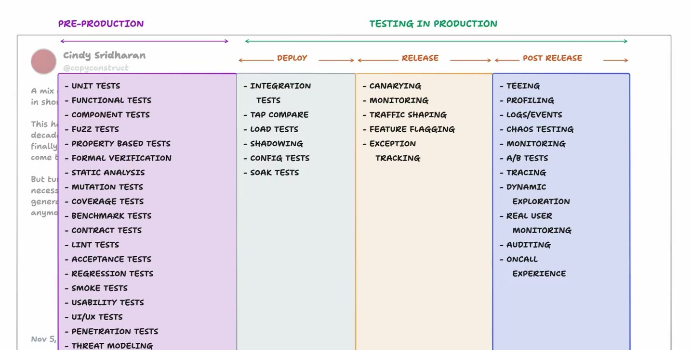
If you look closely at her process, none of these things are anything new or unique that we haven’t had before. These are simply good development tools that previously might have been too expensive to use because they were difficult to understand, write, or maintain.
仔细看她的流程，没有一样是我们以前没有的新东西。它们只是好的工程工具，过去太贵了——难懂、难写、难维护。
But agents drastically reduce these costs. We are truly entering a golden era of software testing and verification, as agents allow us to test everything much more thoroughly than was cost-effective before.
但 Agent 大幅降低了这些成本。我们正在进入软件测试和验证的黄金时代：以前不划算的彻底测试，现在变得划算了。
Formal verification also helps you better understand how your product should work, and whether agents truly understand your intentions and goals.
形式化验证还能帮你想清楚产品到底该怎么工作，以及 Agent 是否真的理解了你的意图和目标。
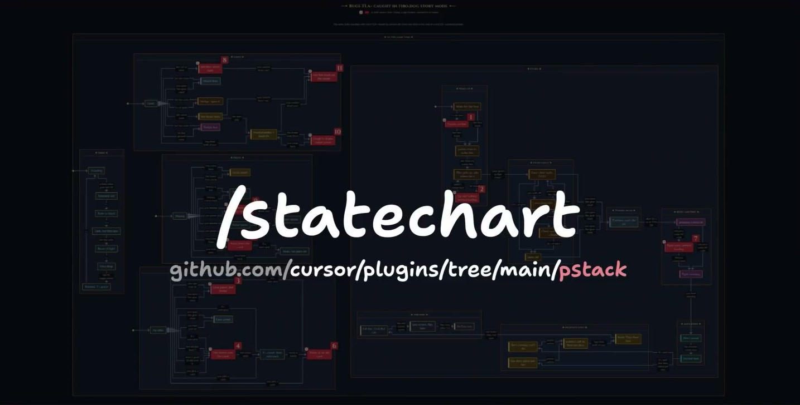
I created a new tool called /statechart in my pstack plugin that helps visualize state machines from a user’s perspective. It’s much easier for me to review this together with the videos and screenshots we provide.
我在 pstack 插件里做了一个叫 /statechart 的工具，从用户视角可视化状态机。配上我们提供的视频和截图，审起来容易得多。
So, now let’s see what the promised paradise looks like. What do you get in return for all this investment?
那么，这些投资换来的「应许之地」长什么样？
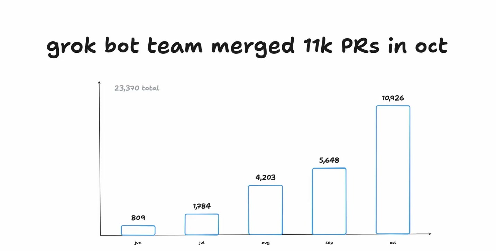
On the Grok Bot team, our velocity is taking off and rapidly increasing. Last month our team shipped an incredible 11,000 pull requests to production, which is just an insane number.
Grok Bot 团队的速度在起飞，而且还在加速。上个月团队往生产合入了大约 11,000 个 PR，这个数字很疯狂。
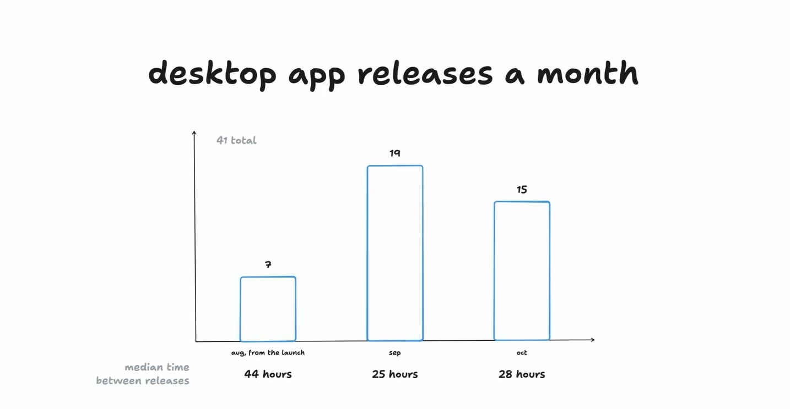
Our client’s release rate has also increased. We cut a new stable version about once a day.
客户端发布频率也提高了。大约一天一个稳定版。
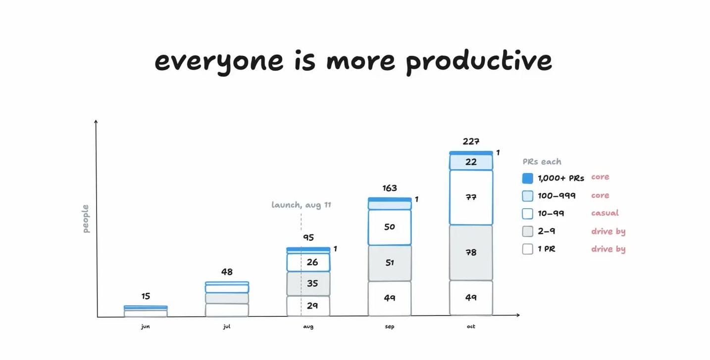
The core development team also ships significantly more. In addition, we have many occasional or drive-by contributors who don’t always have full context, but they also contribute. In October, about 227 people created at least one pull request.
核心开发团队也明显在多交付。另外还有很多偶发、路过的贡献者，他们并不总是有完整上下文，但也在贡献。10 月大约 227 人至少提了一个 PR。
So with this acceleration, you might be thinking: wouldn’t this lead to chaos? Wouldn’t this turn into a pile of junk?
速度这么快，你可能会想：这不会变成混乱吗？不会堆成一堆垃圾吗？
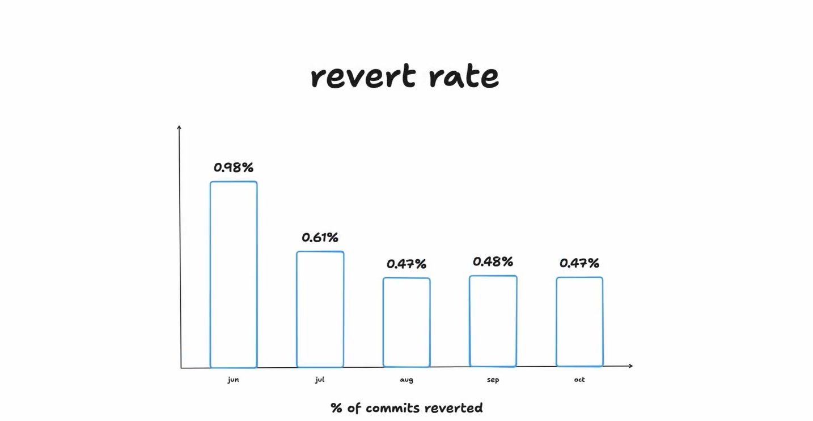
But in reality, the number of reverted merge requests has relatively decreased and remains stable at about half a percent.
实际上，被回滚的比例相对下降了，稳定在大约 0.5%。
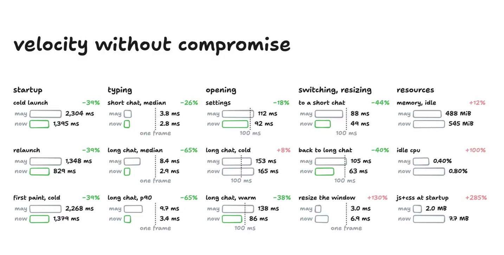
The most interesting thing about this release pace and PR volume is that Grok Bot’s performance has not just remained stable, but has improved in many ways since launch. Launching, typing, opening new chats, switching between them — all of it has become faster.
更有意思的是：在这种发布节奏和 PR 量之下，Grok Bot 的性能不仅稳住了，上线以来很多地方还变快了。启动、打字、打开新对话、切换对话，都更快了。
Keep in mind that Grok Bot remains an Electron application for now. There is a ceiling. But it is already much faster than many other agent interfaces that exist today. For an Electron app with such a high development speed and so many contributors, I’d say that’s pretty good.
别忘了，Grok Bot 目前仍是 Electron 应用。天花板是有的。但它已经比现在很多 Agent 界面快得多。以这种开发速度和这么多贡献者，一个 Electron 应用能做成这样，我觉得相当不错。
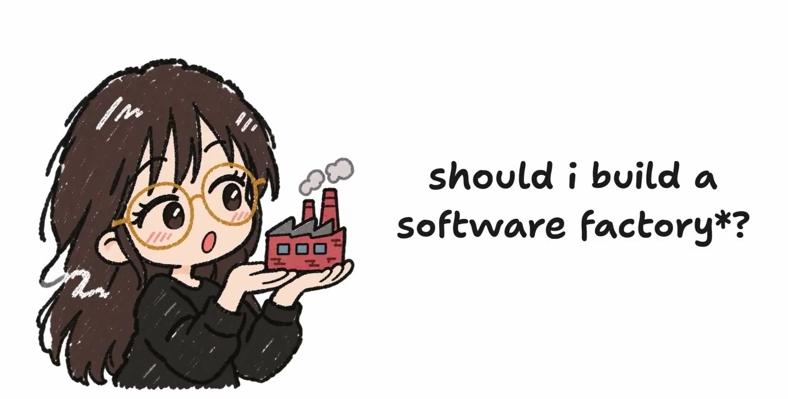
So before you create a “software factory” and automate everything you can, try to fine-tune your agent’s performance by first improving your own codebase.
所以在你建「软件工厂」、把能自动化的都自动化之前，先通过改善自己的代码库，把 Agent 的表现调好。
Start with lint rules to prevent new anti-patterns from appearing, then clean up the code from old ones. Also, make sure your verification strategy is truly robust. Much of this work is a prerequisite for automation anyway.
先用 lint 规则阻止新的反模式出现，再清理旧的。同时确保验证策略真正扎实。这些工作，本来就是自动化的前提。
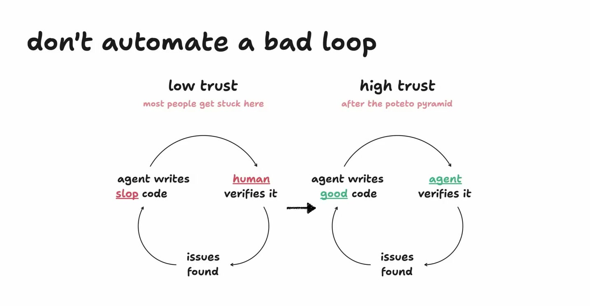
If your inner coding loop produces garbage, then automating that loop will only produce more garbage, and you will have to spend more and more tokens to fix the problem, which, as we know, is very expensive.
如果你的内部编码循环在产垃圾，自动化这个循环只会产更多垃圾，然后你得砸越来越多 token 去修。我们都知道，这非常贵。
When you make these investments in your codebase, static analysis, and runtime verification, you will find that much becomes possible with such a foundation, and that you can easily build your own factory on top of it.
当你在代码库、静态分析和运行时验证上做了这些投资，会发现有了这个地基，很多事情突然变得可能，工厂也可以轻易建在上面。
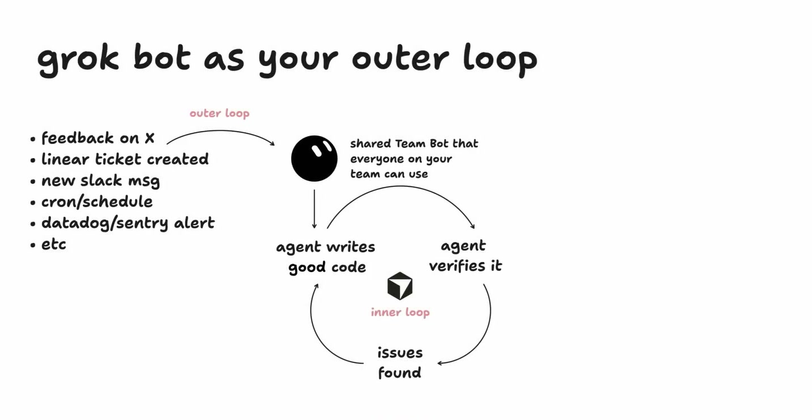
And when you’re ready, Grok Bot is a great way to build that outer loop. We have a variety of connectors and routines that can run Cursor, cloud agents, and projects that allow you to manage hundreds or even thousands of agents.
准备好了之后，Grok Bot 是搭外环的好方式。我们有各种连接器和 routine，可以拉起 Cursor、云端 Agent 和项目，让你编排成百上千个 Agent。
As a quick example: every time we cut a new release, Grok Bot automatically starts a new project for us in Cursor, which fuzzes the entire application, the entire build, and finds bugs by running the application and using it as a real user.
举个快例子：每次我们发新版本，Grok Bot 都会自动在 Cursor 里开一个新项目，对整个应用、整个构建做 fuzz，像真实用户一样跑应用找 bug。
And then it opens a PR with fixes for each bug found and automatically merges them — as crazy as that may sound. And that’s because our codebase is high enough quality that pull requests are successful by default, and most of the product code we deploy no longer requires deep human review.
然后它会给找到的每个 bug 开修复 PR，并且自动合入——听着很疯狂。之所以敢这么干，是因为代码库质量已经够高，PR 默认就是成功的，我们上线的大多数产品代码不再需要人做深度审查。
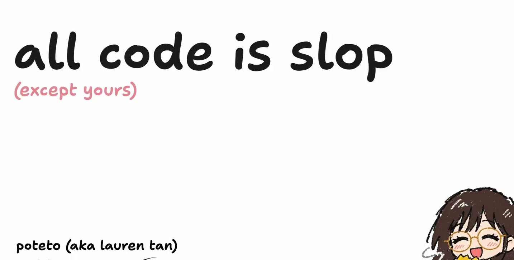
So, when you have a solid foundation and good organic architecture, you can turn chaos into gold and release products at high speed without compromising on quality.
所以，当地基扎实、有机架构做好，你就能把混乱变成黄金，高速发布产品，同时不牺牲质量。
My name is poteto, also known as Lauren. Thank you again for listening to my talk.
我是 poteto，也叫 Lauren。再次感谢你们听完这场演讲。